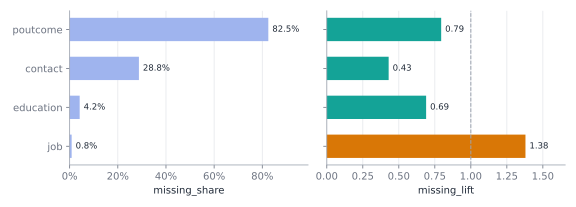

Univariate profile#
Before any variable is binned with care, look at all of them at once: how complete each one is, how its values are distributed, and how strongly it separates events from non-events on its own. kivi.univariate.profile_table() summarizes every column of a data frame in one row, so the whole list of candidates fits in one table.
The profile is the first step of a model. The candidates that pass its screening are binned with care next, as Binning describes, and Risk modeling workflow follows them through the remaining steps.
Profiling the candidates#
The bundled bank data code missing values of its categorical variables with the label unknown. Turn them into missing values first, so that the profile counts them:
>>> import numpy as np
>>> from kivi.datasets import load_bank
>>> from kivi.univariate import profile_table
>>> data = load_bank()
>>> development = data.iloc[:3000]
>>> candidates = development.drop(columns="target").replace("unknown", np.nan)
>>> profile = profile_table(candidates, development["target"])
>>> profile[["kind", "count", "missing_share", "distinct", "top", "top_share"]].round(3)
kind count missing_share distinct top top_share
variable
age numeric 3000 0.000 64 34 0.053
job categorical 2975 0.008 11 management 0.220
marital categorical 3000 0.000 3 married 0.613
education categorical 2875 0.042 3 secondary 0.526
default categorical 3000 0.000 2 no 0.984
balance numeric 3000 0.000 1808 0 0.077
housing categorical 3000 0.000 2 yes 0.567
loan categorical 3000 0.000 2 no 0.844
contact categorical 2137 0.288 2 cellular 0.916
day numeric 3000 0.000 31 20 0.053
month categorical 3000 0.000 12 may 0.307
duration numeric 3000 0.000 764 121 0.007
campaign numeric 3000 0.000 29 1 0.385
pdays numeric 3000 0.000 246 -1 0.825
previous numeric 3000 0.000 18 0 0.825
poutcome categorical 525 0.825 3 failure 0.613
Every column gets one row, indexed by its name:
kindisnumericfor numeric dtypes other than bool andcategoricalfor all others, as infit_spec().countandmissingcount the rows with and without a value, andmissing_shareis the share of rows without one.poutcomeis missing for 82.5% of the customers, those who were not in the previous campaign.distinctis the number of different values.topis the most frequent value andtop_shareits share of the rows with a value. A share close to 1 marks an almost constant variable: 98.4% of the customers have nodefault.
Distribution of numeric variables#
Numeric columns also get the mean, the sample standard deviation, the smallest value, the 1%, 50% and 99% quantiles and the largest value. Categorical columns get NaN:
>>> numeric = profile["kind"] == "numeric"
>>> profile.loc[numeric, ["min", "q01", "q50", "q99", "max"]]
min q01 q50 q99 max
variable
age 19.0 23.0 39.0 71.01 86.0
balance -2082.0 -701.0 461.5 13343.52 42045.0
day 1.0 2.0 16.0 31.00 31.0
duration 4.0 11.0 185.0 1259.16 3025.0
campaign 1.0 1.0 2.0 15.00 50.0
pdays -1.0 -1.0 -1.0 370.01 871.0
previous 0.0 0.0 0.0 8.00 20.0
The 1% and 99% quantiles show the range of the bulk of the values. The largest balance is three times its 99% quantile, so a few customers have far larger balances than the rest. The median of pdays is -1, the code for a customer who was never contacted before.
Screening by IV#
The iv column is the information value of a quick binning: bins quantile bins from bin_edges() for numeric columns, with a group for each special code, and the labels for categorical ones. Missing values form a group of their own. The gini column is the Gini coefficient of the values of a numeric column used as a score: positive when events have higher values, negative when they have lower ones.
>>> ranking = profile.sort_values("iv", ascending=False)
>>> ranking[["kind", "iv", "tied_bins", "gini"]].round(3)
kind iv tied_bins gini
variable
duration numeric 1.594 False 0.627
poutcome categorical 0.423 False NaN
month categorical 0.334 False NaN
contact categorical 0.215 False NaN
job categorical 0.137 False NaN
housing categorical 0.108 False NaN
balance numeric 0.099 False 0.183
loan categorical 0.059 False NaN
education categorical 0.050 False NaN
marital categorical 0.049 False NaN
campaign numeric 0.031 True -0.093
age numeric 0.019 False 0.009
day numeric 0.011 False -0.048
default categorical 0.000 False NaN
pdays numeric 0.000 True 0.175
previous numeric 0.000 True 0.199
These are the IVs of the screening step of Risk modeling workflow, which bins every candidate in the same way. bin_edges warns about tied quantiles; profile_table() records them in tied_bins instead, so profiling many columns raises no warnings. Most values of pdays and previous are -1 and 0, so their tied quantiles merge into a single bin, and their IV of 0 understates them until they are binned with care: pdays with its special code, as below, and previous with custom edges.
The quick binning gives a first ranking, not a final one. Five quantile bins can miss a pattern that other edges would show, and a categorical variable with many rare labels gets an inflated IV until its categories are grouped as in Grouping categories. Read the ranking critically, as the workflow does, and bin the shortlist with care in Binning.
Special values#
A special code such as pdays == -1 is a value, not a number on the scale of the others. Pass it in special, by column as in fit_spec(). The code still counts as a value in count, distinct and top, but special and special_share count it separately, and the numeric summary, the Gini coefficient and the quick binning leave it out:
>>> coded = profile_table(candidates, development["target"], special={"pdays": [-1]})
>>> coded.loc[["pdays"], ["special_share", "min", "q50", "max", "gini"]].round(3)
special_share min q50 max gini
variable
pdays 0.825 1.0 188.0 871.0 -0.332
Among the customers contacted before, half were contacted more than 188 days earlier.
Left out of the quick binning, the code gets a group of its own, and the other values fill the five quantile bins. The IV of pdays rises from 0 to 0.355, the third highest of all the candidates:
>>> coded.loc[["pdays"], ["iv", "tied_bins"]].round(3)
iv tied_bins
variable
pdays 0.355 False
The Gini coefficient of pdays was 0.175 when the code -1 counted as the lowest value; among the customers contacted before, a more recent contact goes with more responses, so the sign turns.
Missing values#
With a target, every column also gets the event rate of all rows, event_rate, and the event rates of the rows without and with a value, missing_event_rate and non_missing_event_rate. The lifts divide them by event_rate, so a lift above 1 marks rows riskier than average:
>>> missing = profile["missing"] > 0
>>> profile.loc[missing, ["missing_share", "missing_event_rate", "missing_lift"]].round(3)
missing_share missing_event_rate missing_lift
variable
job 0.008 0.160 1.379
education 0.042 0.080 0.690
contact 0.288 0.050 0.430
poutcome 0.825 0.092 0.794
Customers whose contact type is missing responded at 5.0%, less than half the rate of 11.6% of all customers. A missing value that carries information like this is worth its own group in the binning, which woe_table() gives it.

Share of missing values and their lift for the four columns with missing values. The missing values of job respond more often than average, those of the other columns less often.#
Sample weights#
profile_table() takes weights, for example the inverse of the sampling rate of each row. Counts become sums of weights and every statistic is weighted, so integer weights give the same table as repeating rows with unit weights. The quantiles are then weighted quantiles by the inverted CDF, as the edges of bin_edges(), while the unweighted quantiles interpolate. Weights therefore change the quantiles and, through the edges of the quick binning, iv and tied_bins, even when they are all 1; every other column equals that of the repeated rows without weights. Without target, the table has only the columns that describe the variables.